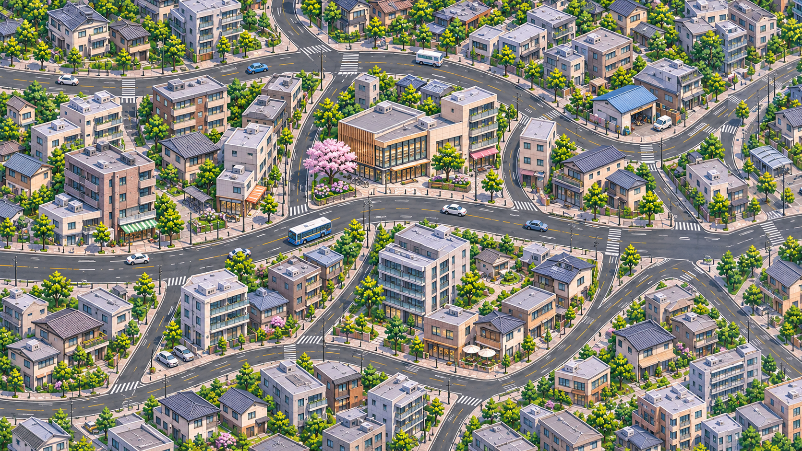

西邻005：弯曲街道与不等形街坊 · 待你审画
延续004认可的路型、比例和日间画风。这张有社区服务楼、商住与住宅组合；004原图保留。
接续诊断，尚未拼接就绪。这里按矩形裁界对照道路；共享建筑被重画，完整对象归属待核。三处可见沥青出口不能证明整带已配准。

描线范围与本张记录
原图观察到5处承载楼群的道路围合；当前部分描线证明其中4处，另有1个导流岛。右上共享围合未纳入当前图，也未核定为005独占新增。004仅描本次连接所需主路，完整路网清单尚未完成。
底稿道路没有照搬为导航；变成庭院/棚顶的设计通道已排除。路线只说明当前部分图的像素几何和假设双向连通，未核交通规则或米数。
005原生1671×941，004为1672×941，均保留原字节。当前无4K或米制覆盖结论，整体目标约旧25图面积1/4，最终图数未定。本张尚未入普通地图，未做正式游戏测试。